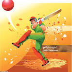
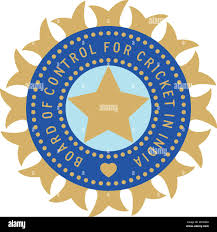
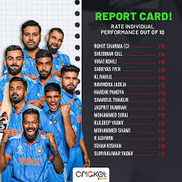
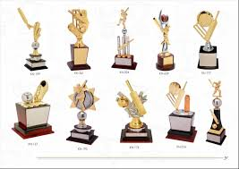
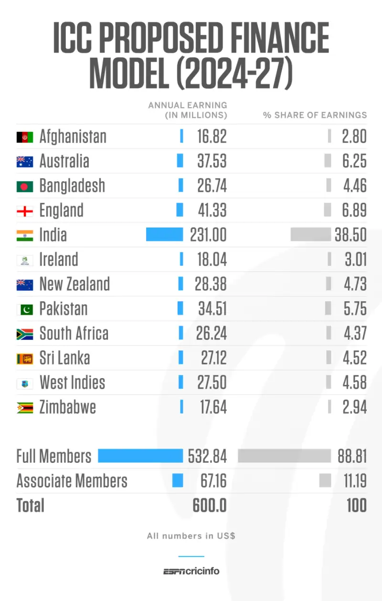
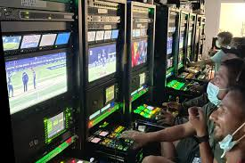
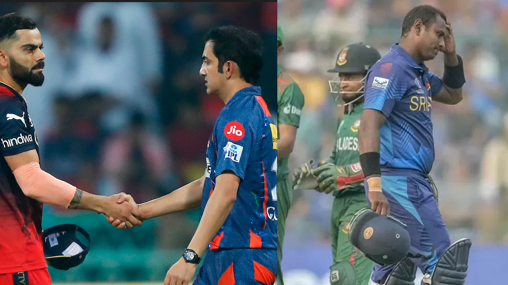

-

- Background
- Foundation
- Expansion and termination
The Indian cricket team has a rich history, evolving from its introduction by European sailors in the 18th century to becoming a global powerhouse. Initially, the team struggled, taking nearly 20 years to secure its first Test victory.
The foundation of a cricket team involves several key aspects: establishing a governing body, defining player roles and responsibilities, and fostering a positive team environment. The governing body, like the BCCI in India, sets rules, organizes matches, and manages the overall structure of the sport.
In mathematics, the "expansion" and "termination" of a decimal refers to whether the decimal representation of a number ends after a finite number of digits or continues infinitely
The term "cricket images administration" likely refers to the management and organization of visual content related to cricket, particularly within the context of cricket boards or organizations

-

- Tournament format
- Player acquisition, squad composition and salaries
- Match rules
- Prize money
The Indian Premier League (IPL) uses a Twenty20 (T20) cricket tournament format. The IPL 2025 league stage included 10 teams divided into two groups, with each team playing 14 matches. Teams played other teams in their own group twice, a designated team from the other group twice, and the remaining teams from the other group once.
IPL teams acquire players through an annual auction, trading, and signing replacements.
The IPL follows the ICC's Code of Conduct regulations for T20 International matches with some specific rules:
Prize money awarded by organizations can come from various sources and is often subject to taxation. Organizations may use donations, sponsorships, or profits from events to fund prizes, and winners may need to report this income to tax authorities.
- Current teams
- Defunct teams
- Timeline

The India men's national cricket team, also known as Men in Blue, represents India in international cricket. It is governed by the Board of Control for Cricket in India and is a full member nation of the International Cricket Council with Test, ODI and T20I status.
- Performance in the IPL by title
- IPL season results
The Indian Premier League (IPL) has held eighteen tournaments since its inception in 2008. Mumbai Indians and Chennai Super Kings are the most successful teams with five titles each
Detailed information on IPL winners and runners-up from 2008 to 2025, including results and venues, can be found at ESPNcricinfo. Royal Challengers Bengaluru secured their first IPL title in 2025. As of 2008, Punjab Kings and Delhi Capitals are the only original teams without a title
-

- League stage positions
Cricket tournaments like the Indian Premier League (IPL) and the Cricket World Cup have seasons marked by intense competition and culminating in championship victories
-

- Orange Cap
- Purple Cap
- Most Valuable Player
- Faimlay Award
- Emerging player award
- Most scores Award
Awarded to the batsman who scores the most runs in a single IPL season.
Awarded to the bowler who takes the most wickets in a single IPL season.
Awarded to the player with the greatest overall impact throughout the tournament, based on a points system that considers batting, bowling, and fielding contributions. The award was previously known as "Man of the Tournament" until 2013.
A team award that recognizes exemplary sportsmanship and adherence to the spirit of cricket. Points are awarded for respecting the laws of the game, opponents, and umpires.
Honors young cricketers who showcase exceptional talent and potential in the IPL season. Eligibility criteria usually include age restrictions and limits on international and IPL experience. The award was initially named differently in earlier seasons.
This is likely referring to the Orange Cap award, as it recognizes the player with the highest score in terms of total runs accumulated throughout the tournament.
-

- Title Sponsorship
- Payments to foreign national boards
- Brand value
The Indian Premier League (IPL) generates substantial revenue through its title sponsorship deals. Tata Group is the current title sponsor for the IPL, holding the rights from 2024 to 2028, in a deal worth ₹2500 crore (approximately $300 million), according to The Economic Times. This translates to ₹500 crore annually.
The Board of Control for Cricket in India (BCCI) compensates foreign cricket boards for releasing their players to participate in the IPL. For instance, in IPL Season 9 (2016), the cricket boards of Sri Lanka, South Africa, and New Zealand collectively earned $10 lakh for releasing their players. Cricket South Africa received the largest share, $6.31 lakh (approximately ₹4.2 crore), followed by Sri Lanka Cricket ($2.43 lakh or ₹1.6 crore) and New Zealand Cricket ($1.73 lakh or ₹1.1 crore). Boards like Cricket Australia, the England and Wales Cricket Board, Cricket West Indies, and the Bangladesh Cricket Board are also compensated.
The IPL has witnessed remarkable growth in its brand value. In 2024, its brand value surpassed ₹1 lakh crore, driven largely by a ₹48,000 crore media rights deal. The IPL's business valuation surged by 12.9% to $18.5 billion (approximately ₹1.56 lakh crore) in 2025, according to a report by global investment bank Houlihan Lokey.
-

- Sony and WSG (2008-2017)
- Star India(2018-2022)
- 2023-2027
- International broadcasters
2008-2017 (IPL): Sony Pictures Networks India (then Multi Screen Media) held the exclusive television rights for the Indian Premier League (IPL) in India.
2018-2022 (IPL and Indian Cricket): Star India secured both television and digital rights for IPL for this period. They also held the global broadcast and digital rights for BCCI's home matches.
2023-2027/2028 (IPL and Indian Cricket): This period saw a significant shift in broadcasting rights for both IPL and Indian cricket, with rights being split:
Indian Premier League (IPL): Star Sports India retained the television rights for the IPL. Viacom18 secured the digital rights for IPL.In late 2024, Disney and Reliance Industries Limited (RIL) finalized a merger in India, which led to the creation of JioStar, a media and entertainment giant.
-

- 2012 and 2013 IPL spot facing and betting match
- Sponsorship
The Indian Premier League (IPL) was rocked by significant spot-fixing and illegal betting scandals in 2012 and 2013, leading to bans for players and teams, and raising concerns about the league's integrity.
PepsiCo's exit: PepsiCo had acquired the title sponsorship rights for five years starting in 2013 for ₹396 crore. However, the beverage giant reportedly pulled out of the deal in 2015, two years ahead of schedule, citing the spot-fixing allegations. According to LawInSport, analysts suggested that the controversies and Pepsi's withdrawal could deter other brands from investing in the IPL.